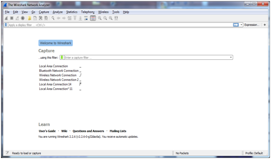
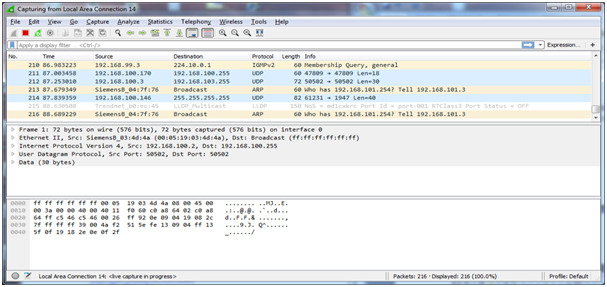
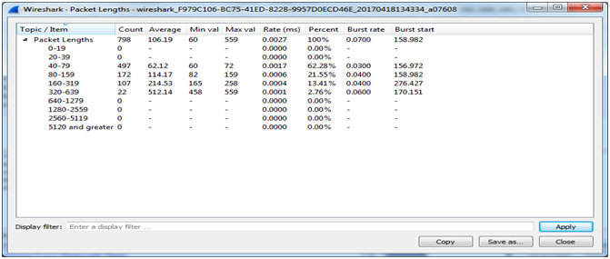
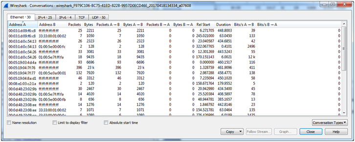
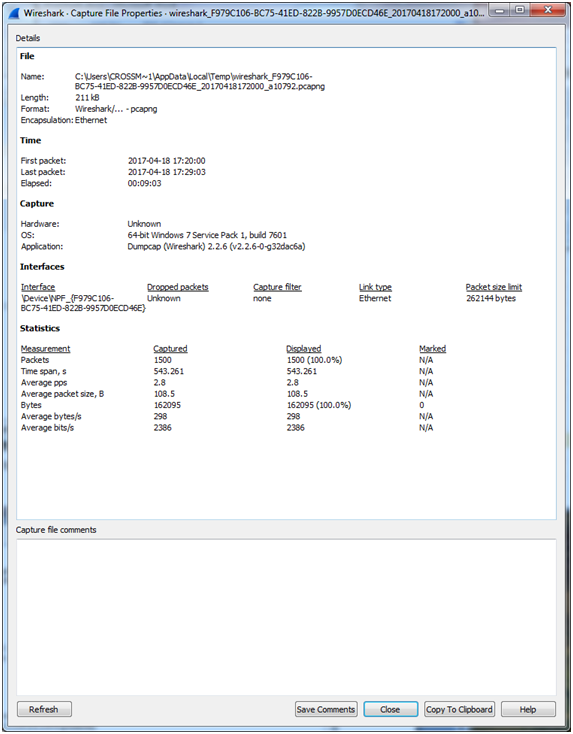
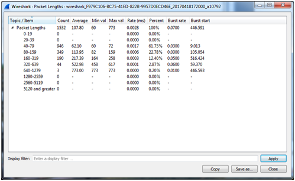
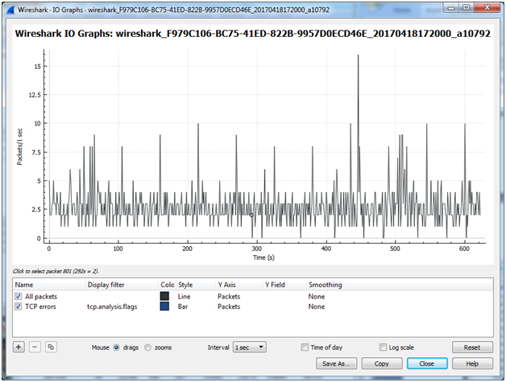

Checking Bandwidth Limits for UL/ULC Application
Scenario
Before deploying UL/ULC-compliant systems for normal use, the maximum network bandwidth of the system network must be measured, verified and recorded not to exceed the following limits of maximum total network bandwidth:
- 50 Mbps, of which 5 Mbps for Life Safety
NOTE: All non-Life Safety applications shall be running at maximum network traffic condition (i.e., maximum IP cameras configured for maximum bandwidth usage specified in configuration) during the aforementioned measurements.
If the limits are reached, you need to reduce the bandwidth (e.g., by reducing the resolution of cameras or by reducing the network size) to meet the required maximum limit. To measure and ascertain the maximum network bandwidth of a system, a packet analysis tool such as Wireshark or similar application must be used. Wireshark (V2.2.6 or higher) is an open source packet analysis tool that it is released under the terms of the GNU General Public License. It is used for network troubleshooting and analysis of traffic. To properly use this tool, the WinPcap (V4.1.3) application, Windows Packet Capture library, is also needed.
1 – Install Wireshark
Scenario: You want to install the Wireshark tool to measure the network bandwidth occupation.
- Download the Wireshark tool from: https://www.wireshark.org/download.html. Select the latest stable Windows 64-bit release.
- After the download, start Wireshark-win64-X.Y.Z.exe, with X.Y.Z being the latest stable Wireshark release.
- A User Account Control message may display, if your UAC settings are set to Default or Always Notify, asking you if you want to allow this installation program to make changes to the computer. Click Yes.
- A standard Install Shield dialog box displays. Click Next.
- The license agreement displays. Click I Agree.
- The Choose components dialog box displays. Leave the default options checked and click Next.
- The Select Additional Tasks dialog box displays. Leave the default options checked and click Next.
- The Select Install Location dialog box displays. Once completed, select Next.
- In the Install WinPcap dialog box, select Install to install/update the WinPcap application to the latest version, then click Next.
- In the Install USBPcap dialog box, leave the Install check box unchecked, as this library is not required for the purpose of measuring the network bandwidth (you can, however, install USBPcap for other purposes).
- Click Install.
- The Installer dialog box shows the progress of the install.
- The WinPcap License Agreement dialog box displays. Select I Agree to accept the license.
- The installer asks if you want to automatically start the WinPcap driver at boot time. Leave the check box checked and select Install.
- Once completed, select Finish and reboot the PC.
2 – Use Wireshark
Scenario: You want to learn the basic Wireshark commands to measure the network bandwidth.
NOTE: These instructions are based on Wireshark V2.2.6.
- Launch Wireshark.
- The initial start screen presents the list of available networks. Select the one that you wish to monitor by double-clicking it.

- The main window displays. Note the menu at the top, and the packet list below it.
Select the menu option Go > Auto Scroll in Live Capture to auto-scroll. 
- The Statistics menu has various choices to help interpret the acquired data.
For example, the following shows an analysis of Packet Lengths. 
- This one tracks Conversations and displays the relationship between the various machines and the data that is being transmitted.

The following Statistic will used to determine the overall bandwidth usage on the network.
- Statistics > Capture File Properties
- Statistics > Packet Lengths
- Statistics > I/O Graphs
Related Topics
- Introduction to Wireshark: https://www.wireshark.org/video/wireshark/introduction-to-wireshark/
- Wireshark User’s Guide: https://www.wireshark.org/docs/wsug_html_chunked/
3 – Determine Maximum Network Bandwidth with Wireshark
Scenario: Using the Wireshark tool, you want to measure the network bandwidth occupation of your Desigo CC.
- Start Wireshark, and select the network you want to analyze.
- Allow Wireshark to run for at least 15 minutes.
- Make sure all non-Life Safety applications are running at maximum network traffic condition (i.e., maximum IP cameras configured for maximum bandwidth usage specified in configuration).
- Initiate events on several of the panels in the network, using the management station to acknowledge, silence and reset the panels.
- From the Statistics > Capture File Properties dialog box, take the Average bytes/s. In our example (see image below) this is 298.
- From the Statistics > Packet Lengths dialog box, select the Max val value from the largest row. In our example, the largest row is the 640-1279 row with an average value of 773.
- From the IO Graphs dialog box, select the peak value for Packets/1 sec. In our example, this is 15.5.
- Multiply these numbers: (298 * 773 * 15.5) = 3570487 Bytes / sec.
- Divide this answer by 1024: (3570487 / 1024) = 3486.8 KB / sec.
- Divide again by 1024: (3486.8 * 1024) = 3.41 MB / sec.
- Check the result against the maximum bandwidth allowed in UL/ULC application.
Example of Network Bandwidth Measurement
Statistics > Capture File Properties

Statistics > Packet Lengths

Statistics > I/O Graphs
